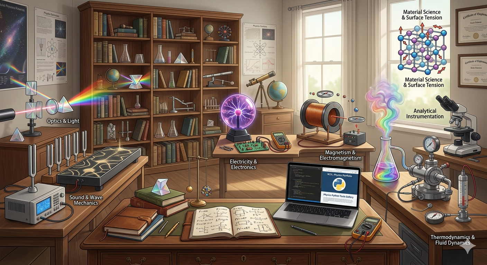

A professional collection of computational tools for Engineering and Physics, developed as part of a Python Technical Portfolio.
Welcome to my curated collection of Python-based tools, bridging the gap between Theoretical Physics and Functional Programming. This gallery transforms complex scientific formulas into interactive, error-resistant software exhibits.

Exploring Material Science and Classical Dynamics.
Precision tools for circuit analysis and electrical engineering.
Analyzing light behavior and geometric properties of lenses.
Computational analysis of wave mechanics and sound propagation.
Computational tools for heat, energy, and state equations.
Python 3.x & Mathematical Logic.LaTeX for high-fidelity scientific rendering.Solid State Physics & Analytical Instrumentation.Developed by Vedika Apte
M.Sc. Physics | Python Developer | Freelance Pitch Deck Expert
Developing tools that simplify complex physical calculations through clean, efficient code. This gallery is a testament to the intersection of scientific rigor and modern programming.
© 2026 Physics Python Tools Gallery